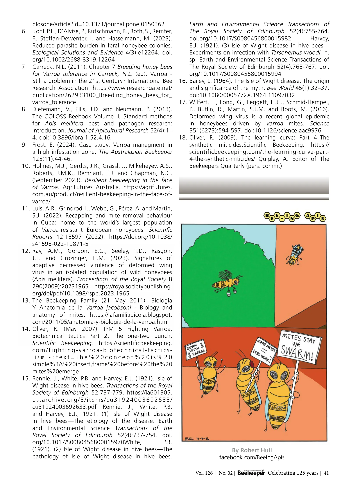

By Robert Hull
facebook.com/BeeingApis
plosone/article?id=10.1371/journal.pone.0150362
6. Kohl, P.L., D’Alvise, P., Rutschmann, B., Roth, S., Remter,
F., Steffan-Dewenter, I. and Hasselmann, M. (2023).
Reduced parasite burden in feral honeybee colonies.
Ecological Solutions and Evidence 4(3):e12264. doi.
org/10.1002/2688-8319.12264
7. Carreck, N.L. (2011). Chapter 7 Breeding honey bees
for Varroa tolerance in Carreck, N.L. (ed). Varroa -
Still a problem in the 21st Century? International Bee
Research Association. https://www.researchgate.net/
publication/262933100_Breeding_honey_bees_for_
varroa_tolerance
8. Dietemann, V., Ellis, J.D. and Neumann, P. (2013).
The COLOSS Beebook Volume II, Standard methods
for Apis mellifera pest and pathogen research:
Introduction. Journal of Apicultural Research 52(4):1–
4. doi:10.3896/ibra.1.52.4.16
9. Frost. E. (2024). Case study: Varroa managment in
a high infestation zone. The Australasian Beekeeper
125(11):44-46.
10. Holmes, M.J., Gerdts, J.R., Grassl, J., Mikeheyev, A.S.,
Roberts, J.M.K., Remnant, E.J. and Chapman, N.C.
(September 2023). Resilient beekeeping in the face
of Varroa. AgriFutures Australia. https://agrifutures.
com.au/product/resilient-beekeeping-in-the-face-of-
varroa/
11. Luis, A.R., Grindrod, I., Webb, G., Pérez, A. and Martin,
S.J. (2022). Recapping and mite removal behaviour
in Cuba: home to the world’s largest population
of Varroa-resistant European honeybees. Scientific
Reports 12:15597 (2022). https://doi.org/10.1038/
s41598-022-19871-5
12. Ray, A.M., Gordon, E.C., Seeley, T.D., Rasgon,
J.L. and Grozinger, C.M. (2023). Signatures of
adaptive decreased virulence of deformed wing
virus in an isolated population of wild honeybees
(Apis mellifera). Proceedings of the Royal Society B
290(2009):20231965. https://royalsocietypublishing.
org/doi/pdf/10.1098/rspb.2023.1965
13. The Beekeeping Family (21 May 2011). Biologia
Y Anatomia de la Varroa jacobsoni - Biology and
anatomy of mites. https://lafamiliapicola.blogspot.
com/2011/05/anatomia-y-biologia-de-la-varroa.html
14. Oliver, R. (May 2007). IPM 5 Fighting Varroa:
Biotechnical tactics Part 2: The one-two punch.
Scientific Beekeeping. https://scientificbeekeeping.
c o m / f i g h t i n g - v a r ro a - b i o t e c h n i c a l - t a c t i c s -
i i / # : ~ : t e x t = T h e % 2 0 c o n c e p t % 2 0 i s % 2 0
simple%3A%20insert,frame%20before%20the%20
mites%20emerge
15. Rennie, J., White, P.B. and Harvey, E.J. (1921). Isle of
Wight disease in hive bees. Transactions of the Royal
Society of Edinburgh 52:737-779. https://ia601305.
us.archive.org/5/items/cu31924003692633/
cu31924003692633.pdf Rennie, J., White, P.B.
and Harvey, E.J., 1921. (1) Isle of Wight disease
in hive bees—The etiology of the disease. Earth
and Environmental Science Transactions of the
Royal Society of Edinburgh 52(4):737-754. doi.
org/10.1017/S0080456800015970White,
P.B.
(1921). (2) Isle of Wight disease in hive bees—The
pathology of Isle of Wight disease in hive bees.
Earth and Environmental Science Transactions of
The Royal Society of Edinburgh 52(4):755-764.
doi.org/10.1017/S0080456800015982
Harvey,
E.J. (1921). (3) Isle of Wight disease in hive bees—
Experiments on infection with Tarsonemus woodi, n.
sp. Earth and Environmental Science Transactions of
The Royal Society of Edinburgh 52(4):765-767. doi.
org/10.1017/S0080456800015994
16. Bailey, L. (1964). The Isle of Wight disease: The origin
and significance of the myth. Bee World 45(1):32–37.
doi:10.1080/0005772X.1964.11097032
17. Wilfert, L., Long, G., Leggett, H.C., Schmid-Hempel,
P., Butlin, R., Martin, S.J.M. and Boots, M. (2016).
Deformed wing virus is a recent global epidemic
in honeybees driven by Varroa mites. Science
351(6273):594-597. doi:10.1126/science.aac9976
18. Oliver, R. (2009). The learning curve: Part 4–The
synthetic
miticides.Scientific
Beekeeping.
https://
scientificbeekeeping.com/the-learning-curve-part-
4-the-synthetic-miticides/ Quigley, A. Editor of The
Beekeepers Quarterly (pers. comm.)
Vol. 126 | No. 02 |
Celebrating 125 years | 41